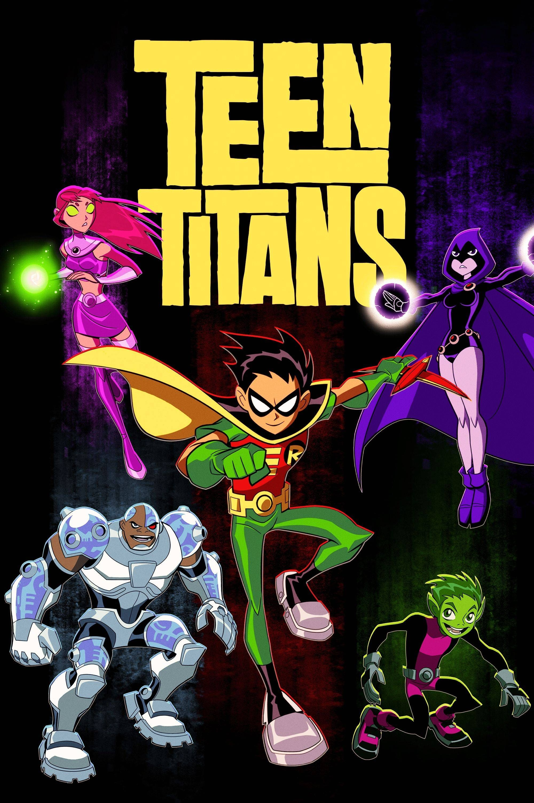

TEEN TITANS 2003
La serie gira en torno a un grupo de superhéroes adolescentes llamado los Teen Titans formado por Robin, Cyborg, Raven, Starfire, Chico Bestia y Terra (se unió al equipo sólo por un breve tiempo). El equipo tiene sus cuarteles generales en la Torre de los Titanes (un edificio con forma de T) y protegen Jump City, una ciudad que tiene un vago parecido con San Francisco y que está en la costa oeste de Estados Unidos.
BROOKLYN NINE-NINE

El ingenioso e inmaduro inspector Jake Peralta debe aprender a respetar las reglas y a trabajar en equipo cuando se incorpora a la comisaría un estricto capitán. Ve todo lo que quieras. Esta divertida serie policiaca ha ganado dos Globos de Oro: mejor serie cómica y mejor actor de comedia.
GINTAMA
La obra se centra en las aventuras de un samurái conocido como Gintoki Sakata, quien ayuda a un adolescente llamado Shinpachi Shimura a salvar a su hermana de un grupo de alienígenas que querían hacerla parte de un burdel.